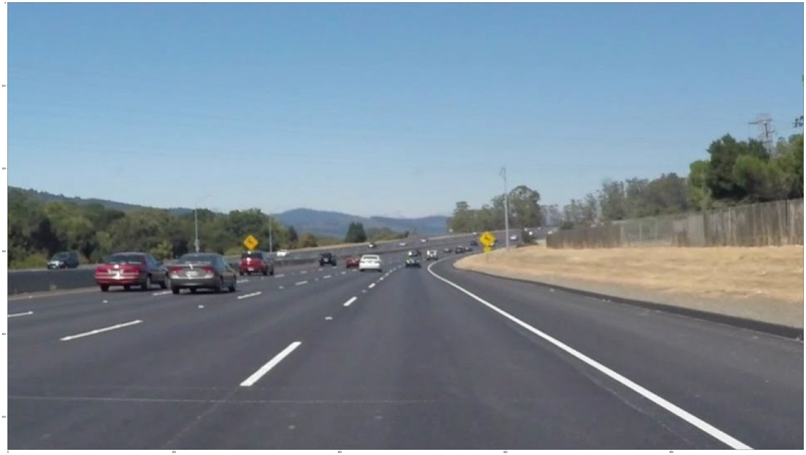
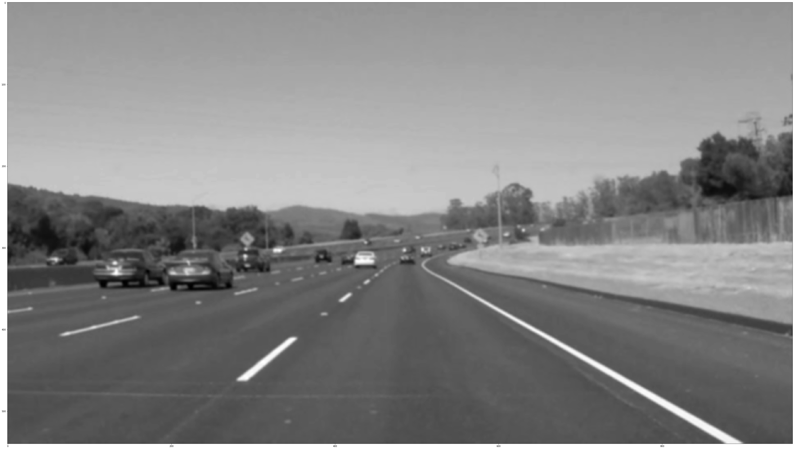
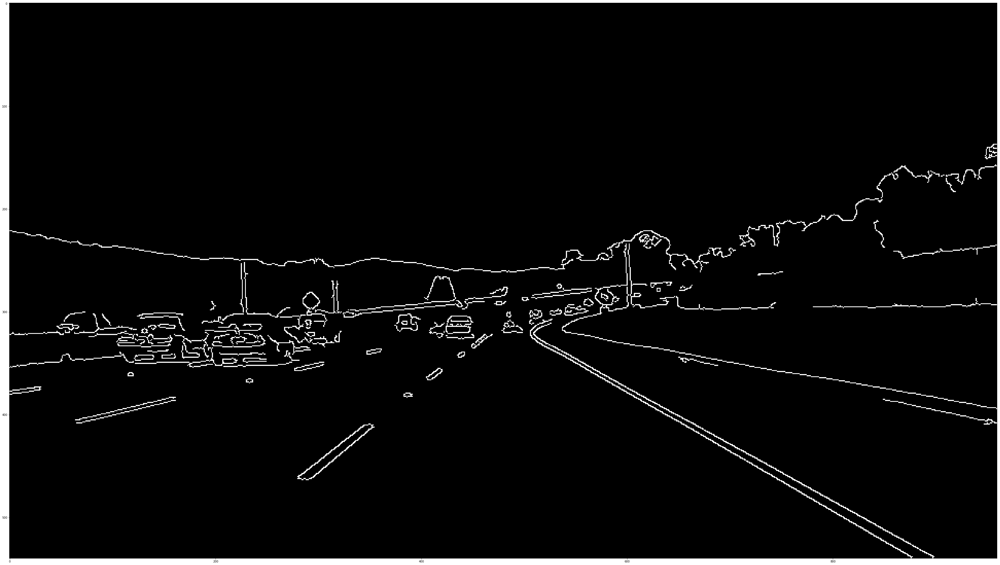
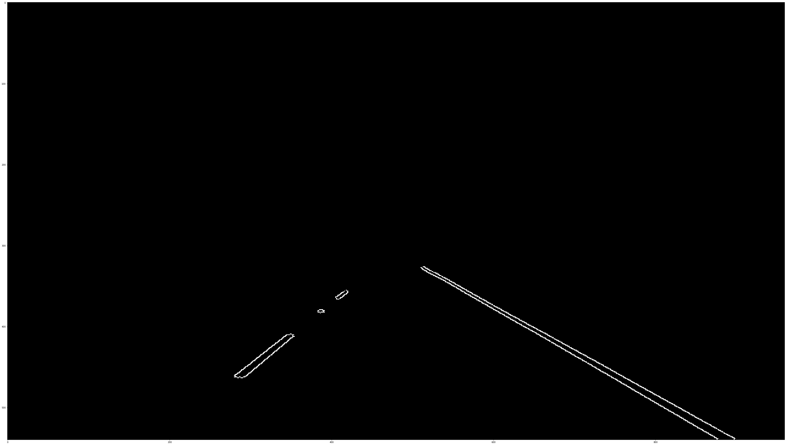
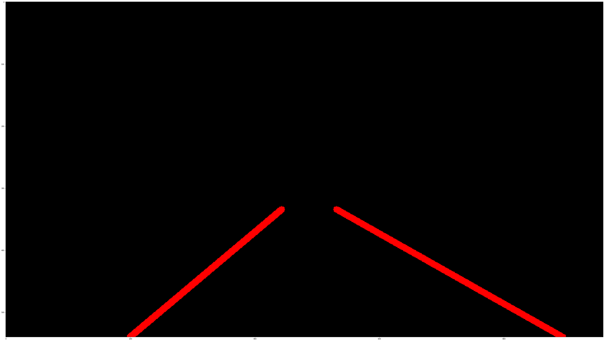
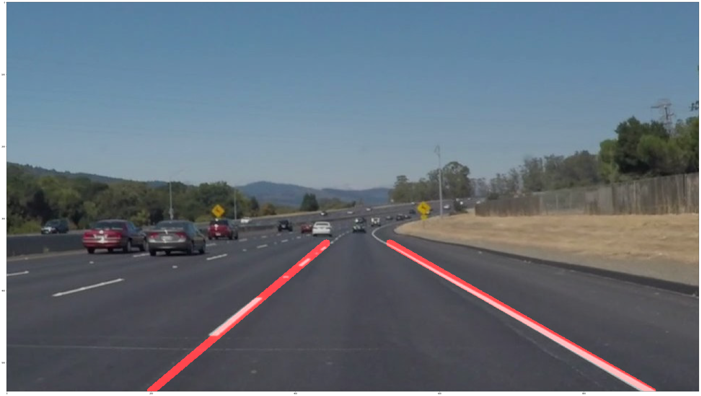

Finding Lane Lines on the Road
The goals / steps of this project are the following:
This is the input image:



Apply the Canny function on the image in the previous step to create an image that shows all the edges. The Canny function generates edges by measuring the gradients of adjacent pixels and identifying the edges where there is high change in the gradients:

Since the lanes are in the bottom half of the image, I created a “region of interest” trapezoidal mask to ensure that none of the other lines outside the region of interest interfere with the algorithm. A hough transform is applied to the edges within the mask to extract the lane lines in the image. For the hough function to work properly, a few parameters need to be tuned to get the desired results. Some of the parameters of interest are minimum number of pixels that are needed to create a line, maximum gap in pixels between connectable line segments, and the minimum number of votes (to ensure the algorithm picks up lines only if it is confident, and ignores the others) etc. The draw_lines() function draws solid lines based on the output of the hough function.


In order to draw a single line on the left and right lanes, I modified the draw_lines() function. I accomplished this by filtering lines by slope, thereby selecting the lines only within a certain range of the actual slope of the lane lines. Once I separated the left lane points and right lane points, I found the best line fit through the points for both the left and the right lanes along with their slopes and intercepts. Since the slopes and intercepts of the left and right lines with the best line fit are now known, I extrapolated these lane lines by extending them to the edges of the ROI mask.
One potential shortcoming would be what would happen when the road lighting conditions are different, especially during the night or in cases where there are street lights. The colors of the lane markings would be different in this case and would need to be accounted for.
Another shortcoming could be that this pipeline may not do quite well on short and curvy roads, since it is optimized for straight roads.
A possible improvement would be to use a moving average of the lane line slopes in the previous frames so that the transition is smooth from one frame to the other in the video, especially when there is a drastic change in the road conditions. To make sure the algorithm operates in all lighting conditions, the colors of the lane lines and the surroundings in different lighting can be taken into consideration while trying to extract the lane lines from the image.
Another potential improvement could be to improve the pipeline for short and curvy roads by detecting the shape of the lane lines and applying different polynomial functions to draw line shapes that match the actual curvy lane lines.